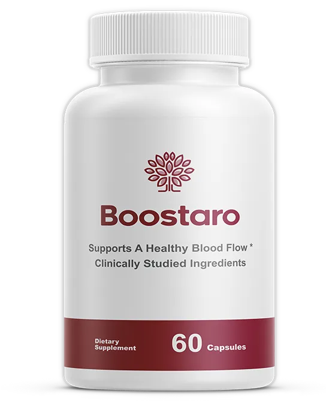
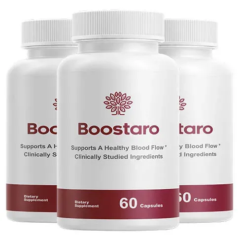
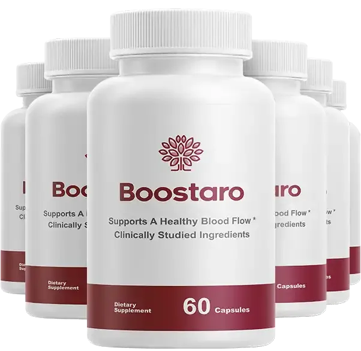

Boostaro® combines a blend of nutrients clinically associated with healthy nitric oxide production and vascular flexibility — supporting circulation, energy, and male confidence at any age.

Boostaro doesn't mask symptoms — it nourishes the underlying systems responsible for circulation, stamina, and confidence. Every capsule is precision-formulated using ingredients backed by peer-reviewed research.
It's not just hormones. It's circulation, oxygen delivery, and endothelial function — silent declines most men never get tested for.
After 40, nitric oxide production drops as much as 50%, narrowing blood vessels and reducing oxygen delivery to muscles, brain, and reproductive tissues.
Cellular CoQ10 levels decline year by year, reducing ATP output. The result is daily fatigue that no amount of coffee fully fixes.
Without adequate Vitamin K2, calcium drifts into artery walls instead of bones — stiffening vessels and impairing blood flow.
Free radicals destroy nitric oxide before it can dilate vessels. Without antioxidant support, even the best circulation effort gets neutralized.
Boostaro was developed by a research team that spent three years analyzing why so many men — even healthy ones — lose stamina, energy, and confidence as they age. Their conclusion was unconventional: most "male performance" issues are actually vascular issues. When the inner lining of blood vessels (the endothelium) functions poorly, every system downstream suffers — including circulation to the reproductive tissues.
The Boostaro formula does not contain stimulants, hormones, or pharmaceutical compounds. Instead, it provides the body with the exact precursors and cofactors needed to manufacture its own nitric oxide, repair its own arterial walls, and produce its own cellular energy. Each bottle contains 60 vegetable-cellulose capsules — a 30-day supply at the recommended dose of 2 capsules daily.
Who Boostaro is designed for: adult men over 30 who want to support healthy circulation, stamina, and vitality as part of a balanced lifestyle. It pairs well with regular cardio, hydration, and a Mediterranean-style diet.
Each ingredient targets a different stage of the vascular and energy cascade — together they create a synergistic system, not just a stack.
L-Citrulline converts to L-Arginine inside the kidneys, then activates endothelial nitric oxide synthase (eNOS) — the enzyme that produces NO, the body's primary vasodilator.
Released nitric oxide diffuses into vascular smooth muscle, triggering relaxation. Vessels widen, blood pressure normalizes, and oxygen-rich blood reaches tissues that previously felt starved.
Pine Bark proanthocyanidins and Vitamin C neutralize superoxide radicals that would otherwise destroy nitric oxide within seconds — extending vasodilation duration.
CoQ10 shuttles electrons through Complexes I, II and III of the inner mitochondrial membrane, accelerating cellular energy synthesis without stimulant side effects.
L-Lysine and L-Proline build the collagen scaffold of blood vessel walls, while Vitamin K2 activates matrix Gla-protein to direct calcium away from arteries and into bones.
Nattokinase supports the body's natural fibrinolytic process, helping maintain normal blood viscosity — a long-overlooked factor in efficient circulation.
Most reviews tell you Boostaro "boosts circulation." Here's the actual biochemical sequence — from the capsule to the cell.
Save up to 67% when you stock up. Every package includes a 180-day money-back guarantee.

All packages ship from the official US manufacturing facility. One-time purchase — no auto-billing or subscriptions.
A practical guide to the root causes of erectile dysfunction.
A stamina and control guide for lasting confidence.
Each ingredient is selected for a specific, documented role in the vascular and energy cascade — no proprietary blends, no fillers, no hidden stimulants.
A non-essential amino acid that bypasses liver breakdown — making it more efficient than L-Arginine at raising plasma arginine and triggering nitric oxide synthesis through eNOS.
Derived from the French maritime pine, rich in proanthocyanidins that protect nitric oxide from free-radical destruction and reinforce endothelial function.
Essential cofactor in collagen synthesis and a recycler of vitamin E. Maintains the structural strength of arterial walls and protects nitric oxide molecules from oxidation.
A vital electron carrier in mitochondrial energy production. CoQ10 levels decline with age — supplementation supports ATP synthesis in heart, muscle, and vascular tissue.
An essential amino acid that supports collagen formation, helps neutralize Lp(a) lipoproteins, and contributes to keeping arteries clear and elastic.
Pairs with L-Lysine and Vitamin C to form the triple-helix backbone of collagen — the structural protein that gives blood vessels their flexibility and tensile strength.
Involved in over 300 enzymatic reactions. Relaxes vascular smooth muscle, supports healthy blood pressure, and activates Vitamin K2-dependent proteins that protect arteries.
Activates matrix Gla-protein, which directs calcium into bones and away from arterial walls. Critical for preventing the arterial stiffening that undermines circulation.
An enzyme isolated from fermented soybeans (natto). Research suggests it supports the body's natural fibrinolytic activity, helping maintain normal blood viscosity and flow.
Individual results vary, but here's what many men report after 30–90 days of consistent use:
Wider, more flexible vessels carrying oxygen-rich blood.
Stimulant-free daily energy through mitochondrial support.
Improved endurance during exercise and physical activity.
Supports healthy arterial function and circulation markers.
Improved cerebral oxygen delivery for sharper focus.
Renewed vitality for relationships and daily performance.
Pine Bark and Vitamin C protect against oxidative stress.
Improved circulation supports faster muscle recovery.
Natural ingredients build slowly. Here's a realistic phase-by-phase look at what most consistent users experience:
Plasma L-Citrulline and CoQ10 levels begin rising. Most men notice subtle energy lift and warmer extremities as circulation responds.
Nitric oxide production stabilizes. Antioxidant defenses build. Stamina during exercise typically improves; recovery feels easier.
Endothelial function continues to improve. Many users report noticeably better blood flow, confidence, and overall vitality.
Cumulative effects: improved arterial flexibility, optimized mitochondrial function, and sustained vitality. Recommended duration for full benefits.
How does Boostaro stack up against pharmaceutical options and generic supplements? Here's an honest comparison.
| Feature | Boostaro | Generic ED Supplements | Prescription Drugs |
|---|---|---|---|
| Approach | Root-cause vascular support | Variable / often unclear | Symptomatic, on-demand |
| Stimulants | None | Sometimes present | N/A |
| Clinical Ingredients | 8 studied compounds | Proprietary blends | Single drug |
| Side Effect Risk | Minimal | Variable | Headache, flushing, more |
| Prescription Required | No | No | Yes |
| Daily Use | Yes - cumulative benefits | Varies | On-demand only |
| Money-Back Guarantee | 180 days | Varies (often none) | None |
| Manufacturing | FDA-registered, GMP, USA | Varies widely | Pharmaceutical grade |
Real feedback from verified buyers. Results may vary based on age, lifestyle, and consistency of use.
"I'm 54 and started Boostaro hoping for better workout recovery. By week 5 I had more daily energy than I'd had in years — and the bedroom side improved too. Glad I went with the 6-bottle pack."
"Been on it for 11 weeks. No jitters, no crashes, no weird aftertaste. My morning energy is consistent, and my doctor said my blood pressure looked a little better at my last check. Worth it."
"My wife noticed the difference before I did honestly. More energy at night, better mood, more stamina on weekend hikes. Five months in and I'm reordering."
"It works — but slowly. The first month I almost gave up because I wasn't feeling much. By week 6 things shifted. Just wish the manufacturer was upfront that you really need 90 days minimum."
"I'm 62 and was skeptical about anything natural working. Three months in and I have to admit — sustained energy is real, and intimacy with my wife is the best it's been in over a decade."
"Tried two other ED supplements first — one had caffeine, the other gave me a headache. Boostaro is genuinely clean. Took about 5 weeks but the result is steady, not spiky."
If you don't feel a meaningful improvement in energy, stamina, or vitality within 180 days, simply email the support team and return your bottles — even empty ones — for a complete refund. No paperwork, no hassles, no awkward conversations.
The guarantee exists because the manufacturer is confident in the formula's cumulative effect. Most men feel the difference well before the 180-day window closes.
Start Risk-Free Today →Transparency builds trust. Boostaro is not the right choice for every person — please consult your physician if any of the following apply:
Dr. Harrington specializes in cardiovascular medicine with a research focus on nutraceutical interventions for vascular and endothelial health in men 40+. He reviews supplement content on this site for clinical accuracy and balance. Educational content only — not medical advice.
Selected peer-reviewed research supporting the core ingredients in the Boostaro formula. Educational use only.
Join thousands of men supporting healthy blood flow, energy, and confidence — naturally. Order today and lock in the 180-day guarantee.
Order Boostaro Now →